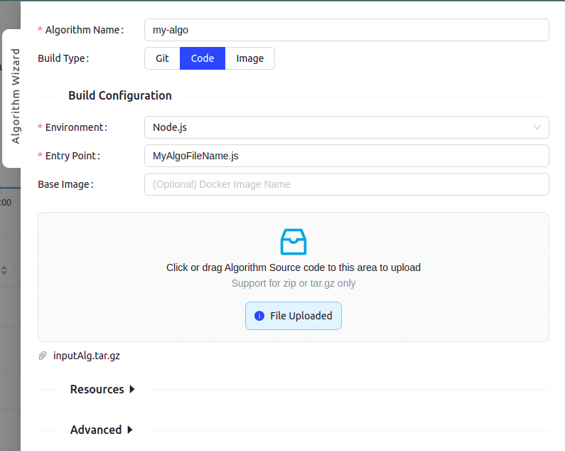
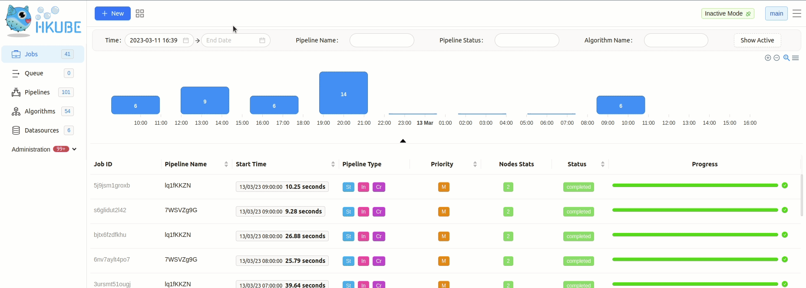
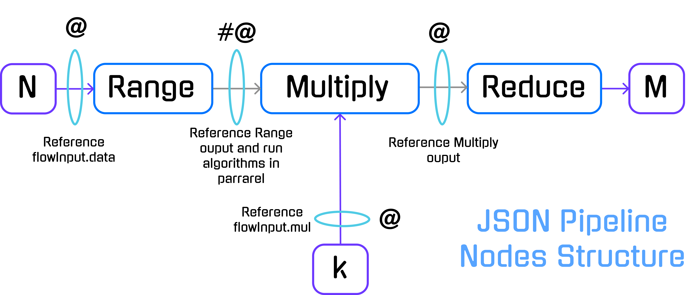
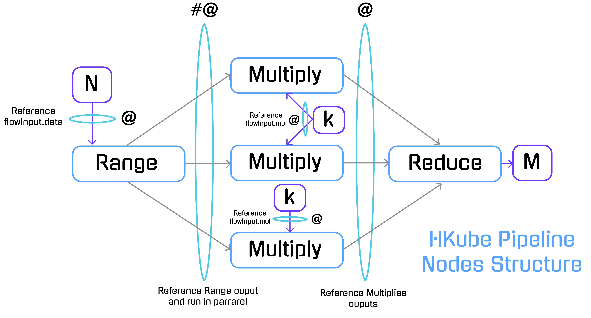

HKube is a cloud-native open source framework to run distributed pipeline of algorithms built on Kubernetes.
HKube optimally utilizing pipeline's resources, based on user priorities and heuristics.
Distributed pipeline of algorithms
Language Agnostic - As a container based framework designed to facilitate the use of any language for your algorithm.
Batch Algorithms - Run algorithms as a batch - instances of the same algorithm in order to accelerate the running time.
Optimize Hardware Utilization
Build API - Just upload your code, you don't have to worry about building containers and integrating them with HKube API.
Prerequisite - See Install for both local and production environments
Creating your first Algorithm
Java example - see Documentation
Python example
def start(args): print('algorithm: range start') input = args['input'][0] array = list(range(1, input + 1)) print("Array is: ", array) return array
Javascript example
module.exports.start = args => { console.log('algorithm: reduce start'); const input = args.input[0]; return input.reduce((acc, cur) => acc + cur); };
There are three ways to deploy your algorithms:

In order to add algorithm manually to HKube, you need to wrap your algorithm with HKube. HKube already has a wrappers for
python,javaScript, andjava.
tar -zcvf MyAlgo.tar.gz *
To further elaborate, the "Packaged file" option requires a package containing all of the necessary files for the project to work, with your algorithms name serving as the "Entry point" in the wizard. You may package all of your algorithms in one package, and choose different algorithm files as different "Entry Points", or choose to package each algorithm separately. 
The pipeline is built from algorithms which are containerized with docker :
Creating a Pipeline

Running your creations
For detailed CLI Example, refer to Step-by-step
Here, we will present a specific example to showcase the abilities of HKube.
We want to solve the next problem with given input and a desired output:
N, k.M so: For example: N=5, k=2 will result:
We will solve the problem by running a distributed pipeline of three algorithms: Range, Multiply and Reduce.
-Receives a parameter N and returns an array of length N with ascending values
-In our pipeline, this will serve as the Entry point
N = 5 5 -> [1,2,3,4,5]
Range - code example
-Receives parameter k and value I , and returns their multiplication result.
-In our pipeline, the value I will be received from Range Algorithm and multiplied by k.
The Multiply algorithm will be invoked parallelly for each Input received from the previous node (Range).
k = 2 , I = 4 (4) * (2) -> (8)
Mult - code example
-The algorithm will return the sum of the received array
-In our pipeline, the algorithm waits to receive all of the results from the Multiply algorithm.
[2,4,6,8,10] -> 30
Sum - code example
We will create the algorithms to solve the problem, HKube currently support two languages for auto build Python and JavaScript.
Examples of the following algorithms are available here.
Further elaboration on the various ways to implement the algorithms is present.
def start(args): print('algorithm: range start') input = args['input'][0] array = list(range(1, input + 1)) print("Array is: ", array) return array
The start method calls with the args parameter, the inputs to the algorithm will appear in the input property.
The input property is an array, so you would like to take the first argument ("input":["@flowInput.data"] as you can see we placed data as the first argument)
def start(args): print('algorithm: multiply start') input = args['input'][0] mul = args['input'][1] return input * mul
We've sent two parameters "input":["#@Range","@flowInput.mul"], the first one is the output from Range that sent an array of numbers, but because we used the batch sign (#) each instance of the multiply algorithm will get one item from the array, the second parameter we passing is the mul parameter from the flowInput object.
module.exports.start = args => { console.log('algorithm: reduce start'); const input = args.input[0]; return input.reduce((acc, cur) => acc + cur); };
We've placed ["@Multiply"] in the input parameter, HKube will collect all the data from the multiply algorithm and will send it as an array in the first input parameter.
After we've created the algorithms, we will integrate them with the CLI. For the packaged tar files, see Repo tar files for each of the algorithms.
Create a yaml (or JSON) that defines the algorithm:
# range.yml name: range env: python # can be python or javascript resources: cpu: 0.5 gpu: 1 # if not needed just remove it from the file mem: 512Mi code: path: /path-to-algorithm/range.tar.gz entryPoint: main.py
All of the needed tar files for this example reside Here
Add it with the CLI:
hkubectl algorithm apply --f range.yml
This step must be performed for each of the algorithms.
The algorithms from the previous step are used to construct a pipeline using HKube.
The pipeline descriptor is a JSON object which describes and defines the links between the nodes by defining the dependencies between them.
{ "name": "numbers", "nodes": [ { "nodeName": "Range", "algorithmName": "range", "input": ["@flowInput.data"] }, { "nodeName": "Multiply", "algorithmName": "multiply", "input": ["#@Range", "@flowInput.mul"] }, { "nodeName": "Reduce", "algorithmName": "reduce", "input": ["@Multiply"] } ], "flowInput": { "data": 5, "mul": 2 } }
Note the
flowInput:data= N = 5,mul= k = 2
For more pipeline descriptor options, see Advanced
HKube allows special signs in node input for defining the pipeline execution flow.
In our case we used:
(@) — References input parameters for the algorithm.
(#) — Execute nodes in parallel and reduce the results into single node.
(#@) — By combining # and @ we can create a batch processing on node results.

We created a pipeline name numbers.
"name":"numbers"
The pipeline is defined by three nodes.
"nodes":[ { "nodeName":"Range", "algorithmName":"range", "input":["@flowInput.data"] }, { "nodeName":"Multiply", "algorithmName":"multiply", "input":["#@Range","@flowInput.mul"] }, { "nodeName":"Reduce", "algorithmName":"reduce", "input":["@Multiply"] }, ]
In HKube, the linkage between the nodes is done by defining the algorithm inputs. Multiply will be run after Range algorithm because of the input dependency between them.
Keep in mind that HKube will transport the results between the nodes automatically for doing it HKube currently support two different types of transportation layers object storage and files system.

The flowInput is the place to define the Pipeline inputs:
"flowInput":{ "data":5, "mul":2 }
In our case we used Numeric Type but it can be any JSON type (Object, String etc).
Create a yaml (or JSON) that defines the pipeline:
# number.yml name: numbers nodes: - nodeName: Range algorithmName: range input: - '@flowInput.data' - nodeName: Multiply algorithmName: multiply input: - '#@Range' - '@flowInput.mul' - nodeName: Reduce algorithmName: reduce input: - '@Multiply' flowInput: data: 5 mul: 2
In order to run the pipeline as raw-data:
hkubectl exec raw --f numbers.yml
First we store the pipeline:
hkubectl pipeline store --f numbers.yml
Then you can execute it (if flowInput available)
# flowInput stored hkubectl exec stored numbers
For executing the pipeline with other input, create yaml (or JSON) file with flowInput key:
# otherFlowInput.yml flowInput: data: 500 mul: 200
Then you can execute it by the pipeline name property:
# Executes pipeline "numbers" with data=500, mul=200 hkubectl exec stored numbers --f otherFlowInput.yml
As a result of executing pipeline, HKube will return a jobId.
# Job ID returned after execution. result: jobId: numbers:a56c97cb-5d62-4990-817c-04a8b0448b7c.numbers
This is a unique identifier enables query on the specific pipeline execution.
Stop pipeline execution:
hkubectl exec stop <jobId> [reason]
Track pipeline status:
hkubectl exec status <jobId>
Track pipeline result:
hkubectl exec result <jobId>